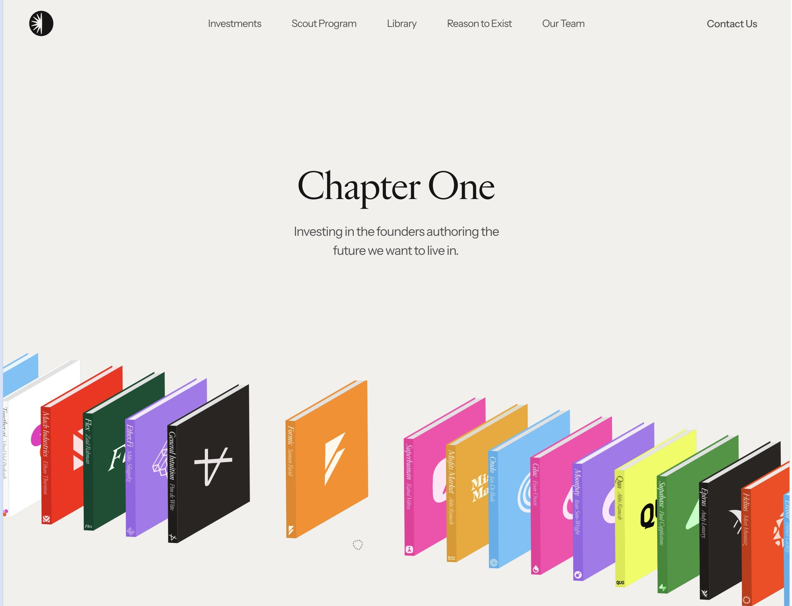
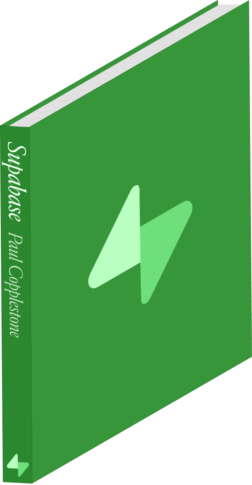
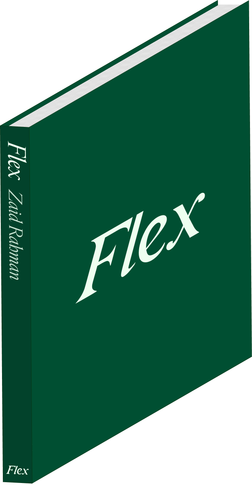
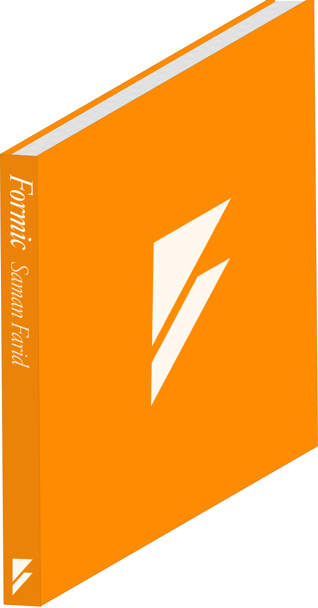
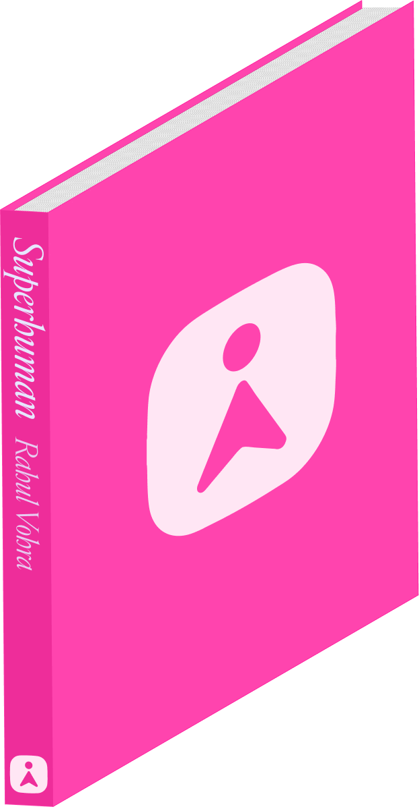

Investing in the founders authoring the future we want to live in.
Chapter One 首页。样本：chapterone.com
奶油色的整屏。标题停在上三分之一。底下那一排立体书像搁在看不见的弧形架子上。橙色那本被抬起来，左右让开一条缝。看起来像三维。打开这一页上面那段，它已经在走。
原站字体叫 Edict Display。这页用免费的 Instrument Serif 顶上。书还是他们烤好的那十六张图。

每一本书是一张透明底的 PNG，大约 623 × 1200。相机已经摆好：书脊朝左，封面朝右前方，同一套光。浏览器只是把图排成一排。没有 Three.js，没有旋转卡片，没有真实的架子模型。
下面四张单独看就是切出来的纸片。黑底是为了让你看见透明的边。把它们放到奶油色上，边就消失，只剩下书。




上面那一排同时开着三件事。页底三个按钮可以单独关掉。关掉哪一件，哪一件的贡献就露出来。
叠在一起。书宽 10.4vw，最小 130 像素。下一本往左拉 64 像素。它们像手里的牌，不是并排放的字典。手机上改成拉 44 像素，书宽改成 26vw。
一边高一边低。不是旋转。每一本的高度等于它此刻的横坐标乘上斜率。斜率是 10 / 步宽。左边的书在屏幕左边，纵坐标是负的，看起来翘起来；右边的书往下沉。合在一起，眼睛把它读成弧形架子。其实是一条斜线。
自己走。十六张图复制三遍，排成一列火车。整列从 -一圈宽 滑到 0，速度大约每秒 50 像素，再无缝接上。所以你永远抽不完。
鼠标停在某一本上，火车停住。左边的书再往左挪 120 像素，右边往右挪 120 像素，这一本自己抬高 18 像素。图 1 里那条缝，就是这个。
#F1F0ED。标题绝对定位在大约 27% 高，衬线 64 像素。副标题无衬线 20 像素，颜色 #515151，字距 -0.8 像素，最宽 335 像素。.hero__fan 贴在底部，左右各探出 8%。里面一条 display: flex; align-items: flex-end 的火车。10.4vw，最小 130。相邻两本 margin-left: -64px。N 等于第 16 本的 offsetLeft 减第 0 本。x 从 -N 走到 0，时长 N / 50 秒，线性，无限循环。y = (offsetLeft + x) * (10 / 步宽)。步宽是相邻两本 offsetLeft 之差。不要给书加 rotateY。translateX(-120)，右边 +120，当前这本 translateY(-18) 并抬高 z-index。.hero { position: relative; height: 100svh; background: #F1F0ED; overflow: hidden; }
.hero__title { position: absolute; top: calc(27% - 10px); left: 50%; transform: translate(-50%); }
.hero__fan { position: absolute; left: -8%; right: -8%; bottom: calc(22% - 36px); }
.hero__train { display: flex; align-items: flex-end; width: max-content; }
.hero__book-wrap + .hero__book-wrap { margin-left: -64px; }
.hero__book { width: 10.4vw; min-width: 130px; }
.hero__book-wrap.is-hovered .hero__book { transform: translateY(-18px); }
/* 每帧 */
const step = wraps[1].offsetLeft - wraps[0].offsetLeft
const cycle = wraps[16].offsetLeft - wraps[0].offsetLeft
const slope = 10 / step
train.style.transform = `translateX(${x}px)` // x: -cycle → 0
wrap.style.transform = `translate(${split}px, ${ (wrap.offsetLeft + x) * slope }px)`
原站用 GSAP 做火车和斜率。这页用 requestAnimationFrame 重写，数字一样。你要做自己的作品集，先换十六张自己的书，别先引三维库。